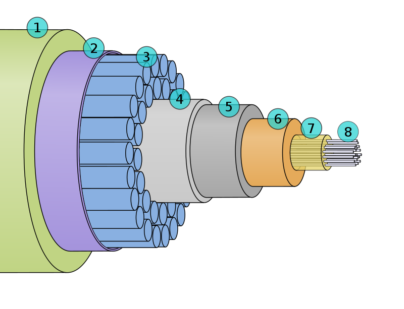

Облака в океане, или Краткий экскурс в жизнь подводных кабелей

25 сентября 1956 года был введен в эксплуатацию первый трансатлантический телефонный кабель. Перед вами небольшой FAQ на тему того, почему Интернет и по сей день живет не в небе, а под водой.
Почему телекоммуникационные компании не используют спутники вместо кабелей?
Спутники отлично подходят для некоторых целей: их можно использовать для той местности, где ещё нет оптоволоконных кабелей, плюс они могут транслировать информацию из одной точки в несколько других.
Однако для поразрядной передачи данных нет ничего лучше, чем оптоволокно. Такие кабели могут передавать большие объёмы данных с меньшими затратами.
Сложно точно узнать объёмы международного трафика, проходящего через спутники, но можно точно сказать, что эти объёмы крайне малы. Статистика, опубликованная Федеральной комиссией по связи США, указывает, что на спутники приходится лишь 0,37% всех международных мощностей США.
Хорошо, а что насчёт моего смартфона, он же использует беспроводной обмен данных?
Когда вы используете телефон, то передаёте данные беспроводным методом только до первой вышки связи, которая передаёт данные уже наземным или подводным путём.
Сколько всего подводных кабелей?
В начале 2017 года насчитали около 428 рабочих подводных кабелей по всему миру. Число постоянно меняется, так как подключают новые кабели и списывают старые.
Как они работают?
Современные подводные кабели используют, как мы уже сказали выше, оптоволоконные технологии. Электрический сигнал превращается в свет, излучаемый микролазерами, и передается на высоких скоростях по волокну к приемнику на другом конце, который, в свою очередь, преобразует свет обратно в электрический сигнал.
Они толстые?
Сам кабель с учетом обмотки толщиной примерно с поливальный шланг. А толщина внутренних элементов кабелей, через которые передаётся сигнал, сравнима с человеческим волосом.
Внутренние волокна кабеля покрыты несколькими слоями изоляции и защитного материала. Те участки кабелей, которые пролегают в прибрежной зоне, покрывают дополнительными слоями для повышения прочности.
Подводный кабель в разрезе: 1. полиэтилен; 2. «майларовая» лента; 3. скрученная стальная проволока; 4. алюминиевая водоизолирующая перегородка; 5. поликарбонат; 6. медная или алюминиевая труба; 7. гидрофобный заполнитель; 8. оптические волокна. Спасибо Wikipedia
Кабели действительно лежат прямо на дне океанов?
Да. Ближе к береговой линии их укладывают под грунтом, чтобы избежать повреждений, собственно поэтому их и не видно на пляжах.
Разумеется, кабели должны прокладываться в наиболее безопасных зонах морского дна, где нет разломов, мест рыболовного промысла, участков для сброса якорей кораблями и прочих опасностей для кабеля. Компании, занимающиеся прокладкой подводных кабелей, открыто сообщают о том, где расположены кабели, чтобы уменьшить вероятность их непреднамеренного повреждения.
Их едят акулы?
Повреждения кабелей акулами — один из мифов СМИ. Это стало популярной темой для статей после того, как в прошлом акулы пару раз «напали» на кабель. На сегодняшний день они не являются основной угрозой для кабелей. Тем не менее кабели часто повреждаются, в среднем более 100 раз в год. Вы редко слышите о повреждениях из-за того, что многие компании, работающие в этой сфере, используют подход «безопасность в цифрах»: до тех пор, пока кабель не будет восстановлен, тот поток данных, который он должен был обслуживать, будет распределён между другими кабелями.
Какова общая длина всех кабелей?
По состоянию на 2017 год общая длина всех действующих кабелей составляет около 1,1 миллиона километров.
Некоторые кабели очень короткие: кабель компании CeltixConnect, соединяющий Ирландию и Великобританию, протянут всего на 131 километр. Другие же кабели могут быть невероятно длинными, например, кабель Asia America Gateway, длина которого составляет 20 000 километров.
Карту-то дайте

Давайте для начала обратимся к цитате Генри Дэвида Торо:
"Наши изобретения обычно похожи на привлекательные игрушки, которые отвлекают наше внимание от действительно важных вещей. Мы спешим строить магнитный телеграф от штата Мэн до Техаса, однако, возможно, Мэн и Техас не имеют никаких важных данных, которые нужно было бы передавать через этот телеграф."
Европа, Азия и Латинская Америка постоянно обмениваются большим количеством данных с Северной Америкой. Из-за того, что Австралия и Латинская Америка данными в таких количествах не обмениваются, между ними и нет никаких кабелей. Зато если кабели появятся, мы будем знать, что там происходит что-то интересное
Кому принадлежат кабели?
Традиционно кабели принадлежали телекоммуникационным агентствам, которые формировали консорциум из тех, кто заинтересован в использовании кабелей. В конце 90-х годов прошлого столетия приток новых компаний создал большое количество частных кабелей, мощности которых продавались их пользователям.
На сегодняшний день существуют и частные, и принадлежащие консорциумам кабели. Самое большое изменение в организации передачи данных через кабели произошло в типе компаний, занимающихся этим.
Поставщики контента, такие как Google, Facebook, Microsoft и Amazon — главные инвесторы в кабельный бизнес. Объём мощности, развёрнутый частными операторами вроде поставщиков контента, превысил за последние годы тот объём мощности, который обеспечивали операторы интернет-магистралей.
Кто использует эти кабели?
Вы, например. Пользователи мощностей подводных кабелей — разные люди и компании, правительства, операторы сотовой связи, транснациональные корпорации и поставщики контента. Любой человек, который вышел в Интернет, уже пользуется подводными кабелями, независимо от устройства.
Какие объёмы информации они могут передавать?
Пропускная способность у всех кабелей разная. Новые кабели могут пропускать больший объём данных, чем те, которые были проложены 15 лет назад. Готовящийся к эксплуатации кабель MAREA сможет передавать данные со скоростью 160 терабит в секунду.
Существует два основных способа измерения пропускной способности кабеля:
- потенциальная пропускная способность — это вся пропускная способность, которую можно получить, если установить всё необходимое оборудование на обоих концах кабеля. Эта метрика является наиболее цитируемой в СМИ;
- реальная пропускная способность фиксируется во время работы кабеля. Владельцы кабелей редко покупают дополнительное оборудование, чтобы обеспечить максимальную пропускную способность. Это дорого. Поэтому мощность кабелей увеличивается постепенно, в зависимости от потребностей пользователей.
Facebook и Google испытывают и запускают свои спутники и дроны. У кабелей всё ещё есть будущее?
Обе эти компании инвестируют в эти проекты для того, чтобы обеспечить подключение к интернету в менее развитых частях планеты, где выход в Интернет ограничен либо его нет вообще. Они пока что не планируют использовать спутники и дроны как замену подводным кабелям.
Facebook и Google продолжают финансировать прокладку оптоволоконных кабелей. Например, обе компании инвестируют средства в проект Pacific Light Cable Network.